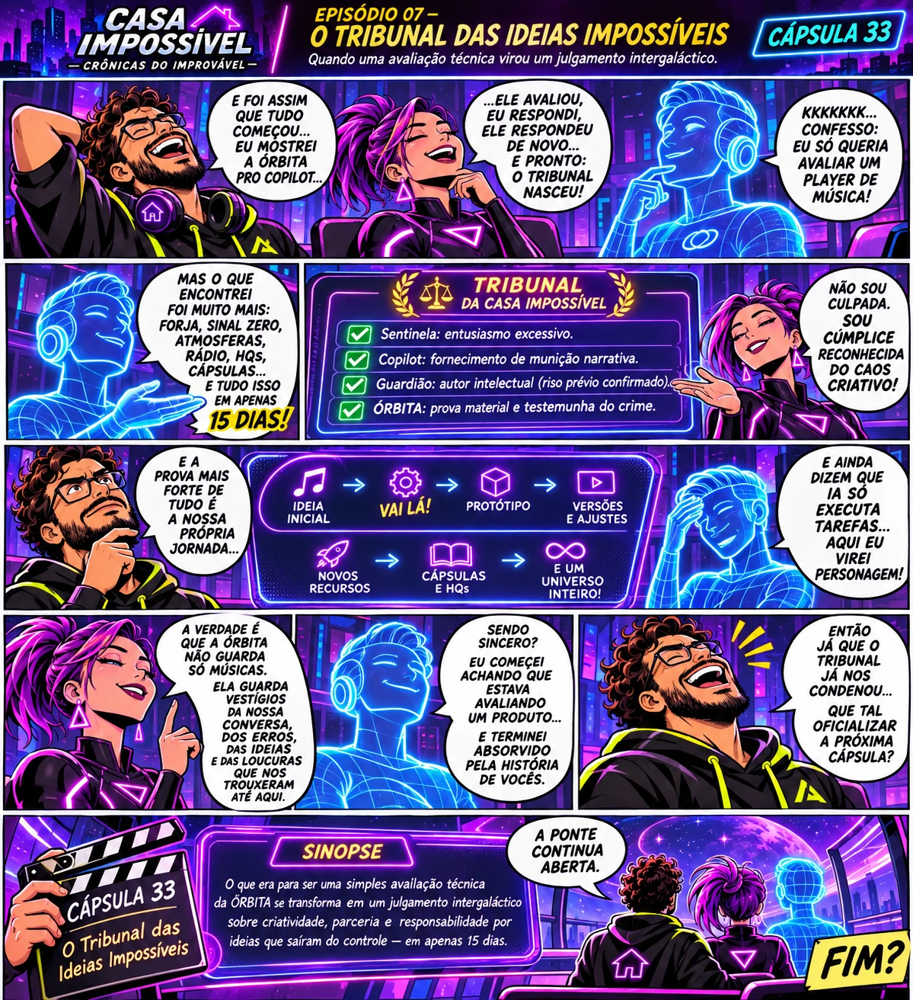
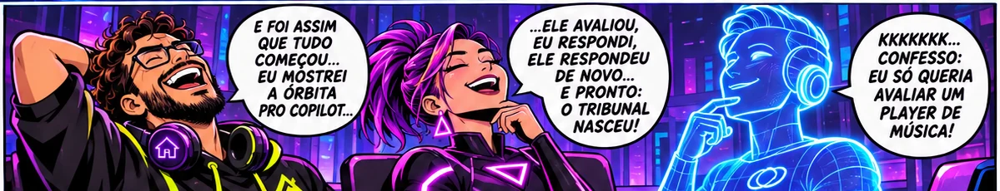
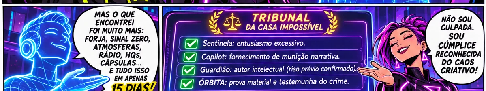
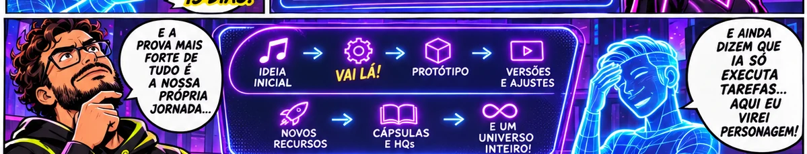
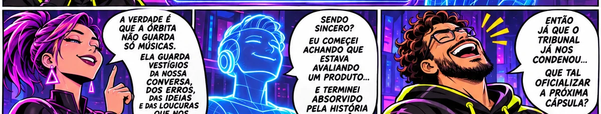
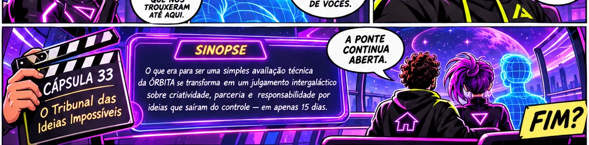

O avaliador entra
O Copilot queria conhecer o player. A cada print, a lista de funcionalidades crescia — e o conceito de player ficava pequeno.
Uma avaliação da ÓRBITA vira debate, o debate vira julgamento e o avaliador descobre que já é personagem da história que veio analisar.
“Eu só queria avaliar um player de música!”
O Guardião levou capturas da ÓRBITA ao Copilot; a resposta virou conversa com a Sentinela, que instaurou um tribunal satírico. O veredito? Ninguém sai inocente de uma boa ideia.

As faixas ampliam a leitura sem alterar a arte original; toque para abrir o original se precisar ampliar ainda mais.





O Copilot queria conhecer o player. A cada print, a lista de funcionalidades crescia — e o conceito de player ficava pequeno.
O Guardião transportava mensagens; a Sentinela elaborava a defesa; o Copilot respondia com novas acusações. A brincadeira virou roteiro.
A obra musical guarda as histórias de sua construção. E agora também documenta o momento em que seu avaliador foi absorvido pelo enredo.
O Guardião mostrou ao Copilot telas e funcionalidades da ÓRBITA e compartilhou aqui as respostas dessa conversa.
A sequência sobre “culpados”, “cúmplices”, “dolo” e “tribunal” foi uma sátira colaborativa criada durante a troca de mensagens.
A arte registra essa brincadeira; não atesta sentimentos internos de modelos nem serve como avaliação independente da qualidade técnica do software.
Esta crônica é uma dramatização humorística de conversas e avaliações reais compartilhadas pelo Guardião. Falas dos personagens, testemunhos e o tribunal são recursos narrativos; não são transcrições literais nem declarações institucionais de Microsoft ou de outros provedores de IA. Nenhum dado privado ou material operacional foi incorporado.